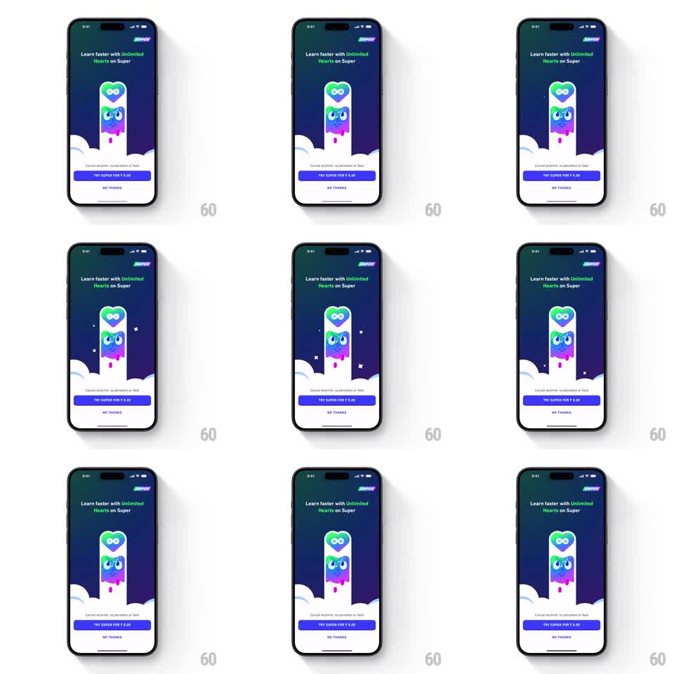

Media
Frame-by-frame

Rebuild this animation 1:1: Duolingo's Unlimited Hearts paywall idle - on the dark Super upsell screen, colorful droplets fall in loops through a pill-shaped glass container that holds the blinking owl under an infinity heart, while the CTA stack stays static below.

Rebuild this animation 1:1: Duolingo's Unlimited Hearts paywall idle - on the dark Super upsell screen, colorful droplets fall in loops through a pill-shaped glass container that holds the blinking owl under an infinity heart, while the CTA stack stays static below. ## Integration Integration: stack-agnostic spec - springs given as stiffness/damping, timed motions as duration + curve; map every value to your framework and animation library of choice. ## Scene Dark navy paywall. SUPER wordmark top-right, headline "Learn faster with Unlimited Hearts on Super". Center: a tall pill-shaped container with cloud shapes at its base; inside, the owl mascot (gradient green-blue-purple) sits under an infinity-heart icon, with droplets (green, blue, pink, purple) falling around it. Bottom: "Cancel anytime; no penalties or fees", a purple "TRY SUPER FOR Rs 0.00" button, and a NO THANKS link. ## Motion spec Pattern: looping ambient paywall idle. - Droplets spawn at the top of the pill and fall (gravity, ~1.2s travel), each fading as it reaches the clouds; 4-6 in flight at once, staggered ~250ms, colors cycling. - The owl blinks every ~3s (lids 80ms down, 80ms up) and bobs gently (translateY +/-3pt, 2s sine). - The infinity heart pulses softly (scale 1.0 -> 1.08 -> 1.0, 1.6s, in phase with the bob). - Small star sparkles twinkle at random points inside the pill (scale 0 -> 1 -> 0, 800ms, random 1-3s gaps). - Clouds drift sideways slowly (+/-6pt, 6s sine). - All UI text and buttons remain static. ## Calibration - Everything loops with no seam; phases are offset so droplets, blink, and pulse never synchronize. - Motion lives strictly inside the pill container - nothing outside it moves. ## Reduced motion Static composition: owl, heart, and two frozen droplets; no loops. ## Don't miss - Droplets fade out into the clouds rather than clipping at the pill's edge. - The pill's glass edge has a subtle highlight that stays fixed while contents move.